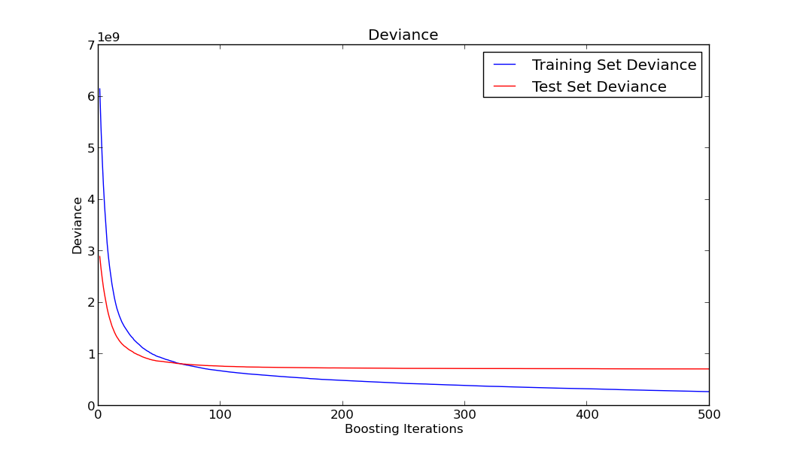
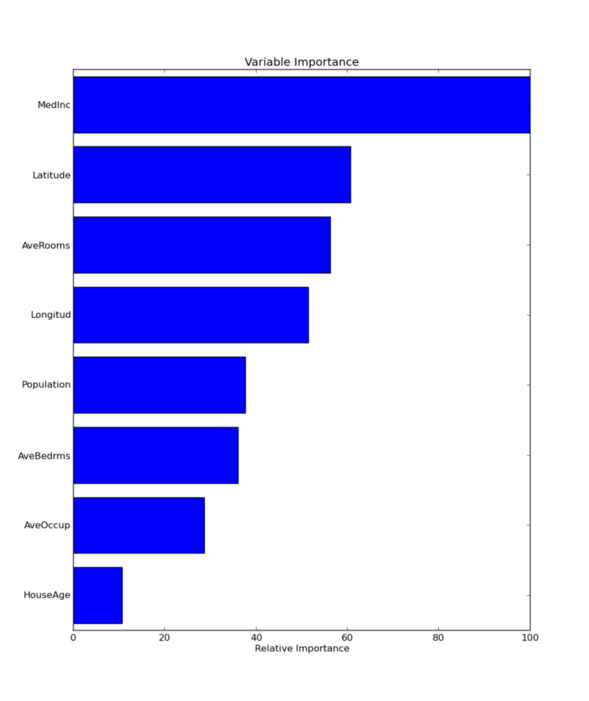
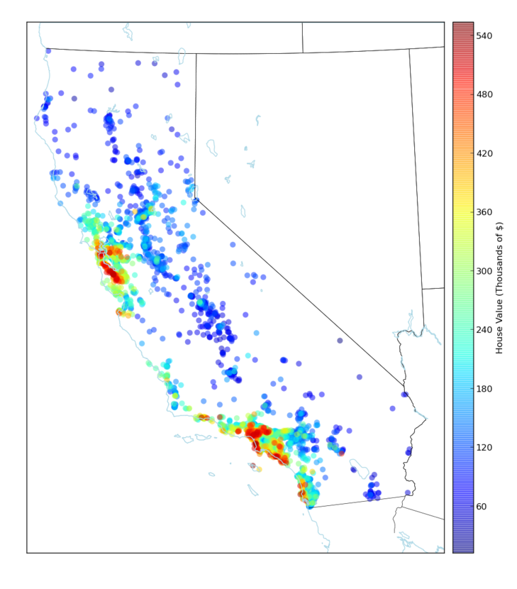

I’ve been doing some data mining lately and specially looking into Gradient Boosting Trees since it is claimed that this is one of the techniques with best performance out of the box. In order to have a better understanding of the technique I’ve reproduced the example of section 10.14.1 California Housing in the book The Elements of Statistical Learning. Each point of this dataset represents the house value of a property with some attributes of that house. You can get the data and the description of those attributes from here.
I know that the whole exercise here can be easily done with the R package gbm but I wanted to do the exercise using Python. Since learning several languages well enough is difficult and time consuming I would prefer to stick all my data analysis to Python instead doing it in R, even with R being superior on some cases. But having only one language for doing all your scripting, systems programming and prototyping PLUS your data analysis is a good reason for me. Your upfront effort of learning the language, setting up your tools and editors, etc. is done only once instead of twice.
The first thing to do is to load the data into a Pandas dataframe
import numpy as np
import pandas as pd
columnNames = ['HouseVal','MedInc','HouseAge','AveRooms',
'AveBedrms','Population','AveOccup','Latitude','Longitud']
df = pd.read_csv('cadata.txt',skiprows=27, sep='\s+',names=columnNames)Now we have to split the datasets into training and validation. The training data will be used to generate the trees that will constitute the final averaged model.
import random
X = df[df.columns - ['HouseVal']]
Y = df['HouseVal']
rows = random.sample(df.index, int(len(df)*.80))
x_train, y_train = X.ix[rows],Y.ix[rows]
x_test,y_test = X.drop(rows),Y.drop(rows)We then fit a Gradient Tree Boosting model to the data using the scikit-learn package. We will use 500 trees with each tree having a depth of 6 levels. In order to get results similar to those in the book we also use the Huber loss function.
from sklearn.metrics import mean_squared_error,r2_score
from sklearn.ensemble import GradientBoostingRegressor
params = {'n_estimators': 500, 'max_depth': 6,
'learn_rate': 0.1, 'loss': 'huber','alpha':0.95}
clf = GradientBoostingRegressor(**params).fit(x_train, y_train)For me, the Mean Squared Error wasn’t much informative and used instead the R2 coefficient of determination. This measure is a number indicating how well a variable is able to predict the other. Values close to 0 means poor prediction and values close to 1 means perfect prediction. In the book, they claim a 0.84 against a 0.86 reported in the paper that created the dataset using a highly tuned algorithm. I’m getting a good 0.83 without much tunning of the parameters so it’s a good out of the box technique.
mse = mean_squared_error(y_test, clf.predict(x_test))
r2 = r2_score(y_test, clf.predict(x_test))
print("MSE: %.4f" % mse)
print("R2: %.4f" % r2)Let’s plot how does the training and testing error behave
import matplotlib.pyplot as plt
# compute test set deviance
test_score = np.zeros((params['n_estimators'],), dtype=np.float64)
for i, y_pred in enumerate(clf.staged_decision_function(x_test)):
test_score[i] = clf.loss_(y_test, y_pred)
plt.figure(figsize=(12, 6))
plt.subplot(1, 1, 1)
plt.title('Deviance')
plt.plot(np.arange(params['n_estimators']) + 1, clf.train_score_, 'b-',
label='Training Set Deviance')
plt.plot(np.arange(params['n_estimators']) + 1, test_score, 'r-',
label='Test Set Deviance')
plt.legend(loc='upper right')
plt.xlabel('Boosting Iterations')
plt.ylabel('Deviance')
As you can see in the previous graph, although the train error keeps going down as we add more trees to our model, the test error remains more or less constant and doesn’t incur in overfitting. This is mainly due to the shrinkage parameter and one of the good features of this algorithm.
When doing data mining as important as finding a good model is being able to interpret it, because based on that analysis and interpretation preemptive actions can be performed. Although base trees are easily interpretable when you are adding several of those trees interpretation is more difficult. You usually rely on some measures of the predictive power of each feature. Let’s plot feature importance in predicting the House Value.
feature_importance = clf.feature_importances_
# make importances relative to max importance
feature_importance = 100.0 * (feature_importance / feature_importance.max())
sorted_idx = np.argsort(feature_importance)
pos = np.arange(sorted_idx.shape[0]) + .5
plt.figure(figsize=(12, 6))
plt.subplot(1, 1, 1)
plt.barh(pos, feature_importance[sorted_idx], align='center')
plt.yticks(pos, X.columns[sorted_idx])
plt.xlabel('Relative Importance')
plt.title('Variable Importance')
plt.show()
Once variable importance has been identified we could try to investigate how those variables interact between them. For instance, we can plot the dependence of the target variable with another variable has been averaged over the values of the other variables not being taken into consideration. Some variables present a clear monotonic dependence with the target value, while others seem not very related to the target variable even when they ranked high in the previous plot. This could be signaling an interaction between variables that could be further studied.
from sklearn.ensemble.partial_dependence import plot_partial_dependence
fig, axs = plot_partial_dependence(clf, x_train,
features=[3,2,7,6],
feature_names=x_train.columns,
n_cols=2)
fig.show()The last step performed was to explore the capabilities of the Python libraries when plotting data in a map. Here we are plotting the predicted House Value in California using Latitude and Longitude as the axis for plotting this data in the map.
from mpl_toolkits.basemap import Basemap
predDf = pd.DataFrame(x_test.copy())
predDf['y_pred'] = clf.predict(x_test)
def california_map(ax=None, lllat=31.5,urlat=42.5,
lllon=-124,urlon=-113):
m = Basemap(ax=ax, projection='stere',
lon_0=(urlon + lllon) / 2,
lat_0=(urlat + lllat) / 2,
llcrnrlat=lllat, urcrnrlat=urlat,
llcrnrlon=lllon, urcrnrlon=urlon,
resolution='f')
m.drawstates()
m.drawcountries()
m.drawcoastlines(color='lightblue')
return m
plt.figure()
m= california_map()
predDf = predDf.sort('y_pred') # Useful for plotting
x,y = m(predDf['Longitud'],predDf['Latitude'])
serieA = (np.array(predDf['y_pred']) - predDf['y_pred'].min())/(predDf['y_pred'].max()-predDf['y_pred'].min())
# z = plt.cm.jet(serieA)
z = np.array(predDf['y_pred'])/1000
m.scatter(x,y,c=z,s=60,alpha=0.5,edgecolors='none')
c = m.colorbar(location='right')
c.set_label("House Value (Thousands of $)")
m.plot()
plt.show()
This blog post was written using Pylit as the tool for doing Literate Programming. The code can be seen here. I think that literate programming is way superior to other software methodologies like TDD when coding algorithms for data analysis. The main problem I find right now is the lack of proper tooling for really taking advantage of literate programming, but this is a technique that I’m definitely going to research deeper.